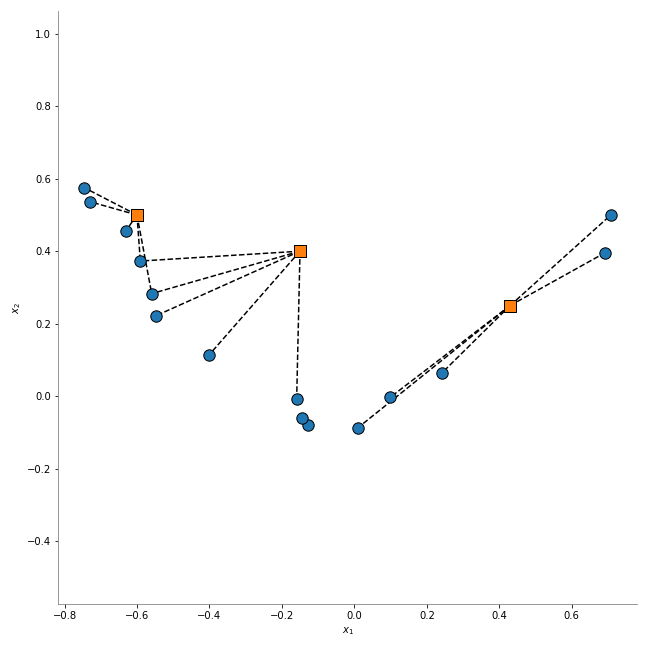
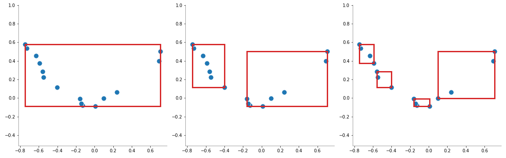

Búsqueda de los vecinos más cercanos — 15:21 min
15:21 min | Ultima modificación: Septiembre 25, 2021 | YouTube
Las metodologías basadas en vecinos más cercanos, requieren de la computación eficiente de las distancias entre puntos. Scikit-learn implementa un método para el cómputo eficiente de dichas distancias, el cual usa los algoritmos ball-tree y kd-tree.
Definición del problema
A partir de un dataset conformado por los puntos azules de la siguiente gráfica, se desea encontrar el subconjunto de puntos \(k\) puntos más cercanos a cada punto de un conjunto arbitrario, representado por los puntos naranja.
Nearest Neighbors
[1]:
#
# Matriz de datos para todos los ejemplos
#
import numpy as np
from sklearn.neighbors import NearestNeighbors
#
# Puntos azules de la gráfica anterior
#
np.random.seed(2)
X = np.random.random((15, 2)) * 2 - 1
X[:, 1] *= 0.1
X[:, 1] += X[:, 0] ** 2
nearestNeighbors = NearestNeighbors(
# -----------------------------------------------------
# Number of neighbors to use by default for kneighbors
# queries
n_neighbors=4,
# -----------------------------------------------------
# Range of parameter space to use by default for
# radius_neighbors queries.
radius=1.0,
# -----------------------------------------------------
# Algorithm used to compute the nearest neighbors:
# 'ball_tree', 'kd_tree', 'brute', 'auto'
algorithm="ball_tree",
# -----------------------------------------------------
# The distance metric to use for the tree.
metric="minkowski",
).fit(X)
[2]:
#
# Encuentra los k-vecinos un grupo de puntos.
#
X_new = np.array(
[
[-0.15, 0.4],
[0.43, 0.25],
[-0.60, 0.5],
]
)
distances, indices = nearestNeighbors.kneighbors(X_new)
indices
[2]:
array([[ 4, 2, 14, 13],
[ 5, 9, 8, 1],
[ 7, 3, 6, 12]])
[3]:
distances
[3]:
array([[0.38037936, 0.40867291, 0.42581141, 0.43610505],
[0.26390434, 0.30108403, 0.37386793, 0.41640179],
[0.05440066, 0.12755537, 0.13592841, 0.16403049]])
[4]:
import matplotlib.pyplot as plt
#
# Matriz binaria indicando las conexiones entre puntos
#
nearestNeighbors.kneighbors_graph(X_new).toarray()
[4]:
array([[0., 0., 1., 0., 1., 0., 0., 0., 0., 0., 0., 0., 0., 1., 1.],
[0., 1., 0., 0., 0., 1., 0., 0., 1., 1., 0., 0., 0., 0., 0.],
[0., 0., 0., 1., 0., 0., 1., 1., 0., 0., 0., 0., 1., 0., 0.]])
Algoritmo Ball-Tree
Este algoritmo se basa en el particionamiento del espacio de entrada en hiperesferas anidadas. Este modelo es interpretado como un arbol binario donde cada nodo define una esfera D-dimensional, la cual contiene un subconjunto de datos.
Cada nodo interno del arbol parte el subconjunto de datos en dos hiperesferas independientes.
Aunque las hiperesferas pueden intersectarse, cada punto es asignado a una y solo una hiperesfera.
Siguiendo los principios del particioamiento recursivo, cada nodo define una hiperesfera que contiene todos los nodos que pertenecen a dicho subarbol.
En el caso del algoritmo de NearestNeighbors, el algoritmo BallTree genera esferas que contienen todos los puntos cercanos.
[5]:
import numpy as np
from sklearn.neighbors import BallTree
ballTree = BallTree(X, leaf_size=2)
dist, ind = ballTree.query(
# -----------------------------------------------------
# Points
X=X_new,
# -----------------------------------------------------
# The number of nearest neighbors to return
k=3,
# -----------------------------------------------------
# f True, return a tuple (d, i) of distances and
# indices if False, return array i
return_distance=True,
# -----------------------------------------------------
# if True, then distances and indices of each point are
# sorted
sort_results=True,
)
display(
ind,
dist,
)
array([[ 4, 2, 14],
[ 5, 9, 8],
[ 7, 3, 6]])
array([[0.38037936, 0.40867291, 0.42581141],
[0.26390434, 0.30108403, 0.37386793],
[0.05440066, 0.12755537, 0.13592841]])
[6]:
#
# Query the tree for neighbors within a radius r
#
ballTree.query_radius(
# -----------------------------------------------------
# An array of points to query
X[:1],
# -----------------------------------------------------
# distance within which neighbors are returned
r=1.0,
# -----------------------------------------------------
# if True, return only the count of points within
# distance r
count_only=True,
# -----------------------------------------------------
# if True, the distances and indices will be sorted
# before being returned
sort_results=False,
)
[6]:
array([14])
[7]:
#
# Compute a gaussian kernel density estimate
#
ballTree.kernel_density(
# -----------------------------------------------------
# An array of points to query
X=X_new,
# -----------------------------------------------------
# the bandwidth of the kernel
h=0.1,
# -----------------------------------------------------
# 'gaussian', 'tophat', 'epanechnikov', 'exponential',
# 'linear', 'cosine'
kernel="gaussian",
)
[7]:
array([2.01557208e-02, 6.77755878e-01, 3.29235309e+01])
Algoritmo KD-Tree
En este algoritmo, la partición del espacio se hace mediante hiperplanos paralelos a los ejes coordenados que dividen el espacio en hipercubos, el cual se interpreta como un árbol binario.
[8]:
from sklearn.neighbors import KDTree
kdTree = KDTree(X, leaf_size=2)
dist, ind = kdTree.query(X_new, k=3)
display(
ind,
dist,
)
array([[ 4, 2, 14],
[ 5, 9, 8],
[ 7, 3, 6]])
array([[0.38037936, 0.40867291, 0.42581141],
[0.26390434, 0.30108403, 0.37386793],
[0.05440066, 0.12755537, 0.13592841]])
[9]:
def fig_kdtree():
import numpy as np
from matplotlib import pyplot as plt
from matplotlib.patches import Rectangle
from sklearn.neighbors import KDTree
np.random.seed(2)
X = np.random.random((15, 2)) * 2 - 1
X[:, 1] *= 0.1
X[:, 1] += X[:, 0] ** 2
tree = KDTree(X, leaf_size=2)
_, _, _, node_bounds = tree.get_arrays()
hyperplanes = [[0], [1, 2], [3, 4, 5, 6]]
plt.figure(figsize=(16, 5))
for i_plot, plane_indices in enumerate(hyperplanes):
plt.subplot(1, 3, i_plot + 1)
plt.scatter(
X[:, 0], X[:, 1], marker="o", s=130, edgecolors="white", c="tab:blue"
)
for index in plane_indices:
p0 = node_bounds[0][index]
p1 = node_bounds[1][index]
width = p1[0] - p0[0]
height = p1[1] - p0[1]
plt.gca().add_patch(
Rectangle(p0, width, height, fill=False, ec="tab:red", lw=3, fc="none")
)
plt.gca().spines["left"].set_color("gray")
plt.gca().spines["bottom"].set_color("gray")
plt.gca().spines["top"].set_visible(False)
plt.gca().spines["right"].set_visible(False)
plt.axis("equal")
plt.tight_layout()
plt.savefig("assets/kdtree.png")
plt.close()
# fig_kdtree()
[10]:
def fig_balltree():
import numpy as np
from matplotlib import pyplot as plt
from matplotlib.patches import Circle
from sklearn.neighbors import BallTree
#
# Generación de la muestra de datos
#
np.random.seed(2)
X = np.random.random((15, 2)) * 2 - 1
X[:, 1] *= 0.1
X[:, 1] += X[:, 0] ** 2
#
# Generación del arbol
#
tree = BallTree(X, leaf_size=2)
_, _, node_data, node_bounds = tree.get_arrays()
balls = [[0], [1, 2], [3, 4, 5, 6]]
plt.figure(figsize=(16, 5))
for i_plot, ball_indices in enumerate(balls):
plt.subplot(1, 3, i_plot + 1)
plt.scatter(
X[:, 0], X[:, 1], marker="o", s=130, edgecolors="white", c="tab:blue"
)
for index in ball_indices:
center = node_bounds[0][index]
radius = node_data[index][3]
plt.gca().add_patch(Circle(center, radius, ec="tab:red", lw=3, fc="none"))
plt.gca().spines["left"].set_color("gray")
plt.gca().spines["bottom"].set_color("gray")
plt.gca().spines["top"].set_visible(False)
plt.gca().spines["right"].set_visible(False)
plt.axis("equal")
plt.tight_layout()
plt.savefig("assets/balltree.png")
plt.close()
# fig_balltree()
[11]:
def fig_nearestNeighbors():
import numpy as np
from matplotlib import pyplot as plt
from sklearn.neighbors import NearestNeighbors
#
# Generación de la muestra de datos
#
np.random.seed(2)
X = np.random.random((15, 2)) * 2 - 1
X[:, 1] *= 0.1
X[:, 1] += X[:, 0] ** 2
plt.figure(figsize=(9, 9))
plt.scatter(X[:, 0], X[:, 1], marker="o", s=130, edgecolors="black", c="tab:blue")
X_new = np.array(
[
[-0.15, 0.4],
[0.43, 0.25],
[-0.60, 0.5],
]
)
plt.scatter(
X_new[:, 0],
X_new[:, 1],
marker="s",
s=130,
edgecolors="black",
c="tab:orange",
zorder=10,
)
nearestNeighbors = NearestNeighbors(
n_neighbors=3,
algorithm="kd_tree",
).fit(X)
neighbors = nearestNeighbors.kneighbors(X_new, 5, return_distance=False)
for i_new_point in range(len(X_new)):
for neighbor in neighbors[i_new_point]:
plt.plot(
[X_new[i_new_point][0], X[neighbor, 0]],
[X_new[i_new_point][1], X[neighbor, 1]],
"--k",
zorder=0,
)
plt.xlabel("$x_1$")
plt.ylabel("$x_2$")
plt.gca().spines["left"].set_color("gray")
plt.gca().spines["bottom"].set_color("gray")
plt.gca().spines["top"].set_visible(False)
plt.gca().spines["right"].set_visible(False)
plt.axis("equal")
plt.tight_layout()
plt.savefig("assets/nearestNeighbors.png")
plt.close()
# fig_nearestNeighbors()